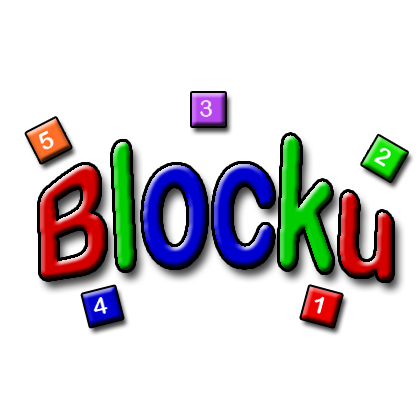
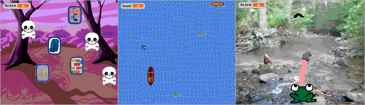
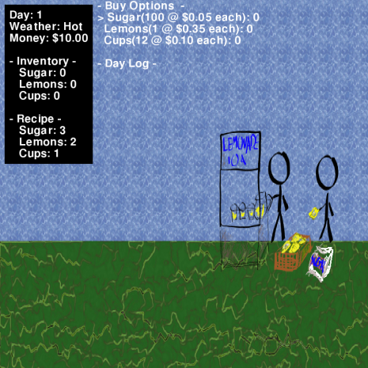

One of the most unique initiatives at MAGIC is the FOSS@MAGIC effort, an initiative that originally grew out of the Department of Interactive Games and Media's course in educational game development for the OLPC.
Today, FOSS@MAGIC sponsors numerous projects, hackathons, regional get-togethers, birds-of-a-feather gatherings, and events throughout the year in connection with the MAGIC Center, the School of IGM, the Golisano College of Computing & Information Sciences, other elements of the campus that span the entire university, and external partners.
Since 2009, this group has brought FOSS speakers to campus, sponsored professional development opportunities for faculty, housed externally sponsored and faculty and student created research and development projects and has brought an annual regional FOSS conference to the RIT campus on several occasions. Known throughout the region, this group is an active and vibrant part of the Rochester open source movement, and is engaged with a variety of institutions throughout the region and the nation.
Specifically, FOSS @ RIT is an initiative to promote Free/Open Source Software related activities at RIT that:
Pursues applied research in and around RIT and with sponsors and external entities
Supports Summer Undergraduate Research Fellowships
Develops and/or supports FOSS academic efforts including the Open Source Minor, project courses and independent studies
Coordinates and/or sponsors FOSS events like hackathons, speakers and POSSE
Offers students employment opportunities for part-time work and co-ops with projects that are released via open-source license
To see what
FOSS @ MAGIC
is all about, here's a sample activity we engage with every year on election night. This is the kind of hacking we're excited about.
Get Involved
Join our IRC Channel #rit-foss and #rit-innovation on irc.freenode.net. This is a great place to introduce yourself and get in contact with anyone involved in foss@magic.
We have an IRC bot running under the name foss_bot which sits in and logs any channel we feel is important to the Foss project. Please feel free to view the foss bot page and logs. You can also visit us on Facebook, and connect with us through MAGIC.
Key Programs and Departments Engaged in FOSS @ MAGIC
School of Interactive Games & Media, Golisano College of Computing & Information Sciences: The School of IGM is home to several courses and projects, as well as the Open Source Minor, the first of its kind at any academic institution in the world.
Background and Need for Research
Support for open source methodologies and practices is often haphazard or an afterthought in higher education. Computing programs around the world use tools, develop code libraries, and share their work with others, but often publish in ways that are restrictive or less 'open' than they might appear. The current commercial sector is dominated by players that produce closed-source solutions, but this is rapidly changing, with several major corporations now producing libraries and toolsets available through open source licenses.
Open source is now a key strategic component of the software world, but that is only scratching the surface: while the methodologies and practices of the FOSS movement often seem a good match to the ethos of the university, we feel universities must go further and provide direct educational and experiential opportunities for students to learn about open source processes and practices. Only by directly engaging in work with these tools, practices, and communities will students effectively incorporate the benefits of the open source approach in their own work and contributions.
Our work is generously funded by Red Hat, Sugar Labs, and others, with such funding used largely to support open source student porjects, library contributions, and development opportunities.
In addition, such funding supports curriculum development, hack-a-thons, outreach and engagement events with the local community and regional and national institutions. Our work engages students, faculty, and staff in exploring the possibilities that become possible as software becomes a freely available resource, both to draw from and contribute to. We're solving the worlds problems through code.
FOSS@MAGIC Projects

Blocku
Abstract
Blocku is a puzzle game consisting of filling a grid with squares by matching the squares sides by following a constraint.
Blocku is a game that can be used by teachers to teach a multitude of subjects to students. The teacher will be able to create a constraint such as match the formula to the answer or A + B = C. Then the teacher makes a list with two columns. Each row in the columns is a pair of of matching objects. The first row of column A matches the first row of column B.
Using this formula the game will randomly assign the objects of each column to square blocks, one object per side. The student then has to put all the pieces in a grid so that pairs on the sides of the squares follow the constraint. The student will be able to move the pieces as well as rotate them. Submitted by: fran.
CIVX
Abstract
CIVX is a open source public data aggregation framework that focuses on government transparency and transitioning raw data into open and index-able formats. Our core platform is designed to simplify the process of modeling, scraping, scrubbing, correlating, and visualizing raw data.
This tour is intended to point out the types of information that CIVX aggregates as well as the nuance of the interface, please feel free to contact us with any questions. Submitted by: decause.
Mathmematical Adventure: Fortune Hunter
Abstract
Mathematical Adventure: Fortune Hunter draws on teaching children of a global scale fourth grade mathematics through the guise of a dungeon styled adventure game. Players will be able to explore dungeons and fight fearsome battles with various monsters, each pertaining to a unique mathematical concept. The player controls a protagonist that must progress through maze-like dungeons, solve puzzles / problems, and defeat enemies in a two dimensional world. It is a single player adventure with room for ad hoc cooperative play in the future. Submitted by: jlew.
FOSS Community RPG Research
Abstract
The goal of this project has been to research and plan a game which promotes and rewards FOSS (Free and Open Source Software) development. However, this goal is no easy task since game design alone provides intense challenges to providing a fun and balanced experience. Adding on FOSS development stats makes game design much harder, adding imbalance and other issues. On top of all of this, we have been going in alone, researching this new topic that has little prior research.
Girl Scouts games for Life Workshop
Abstract
Since March, 2009, RIT’s Lab for Technological Literacy and faculty and students from the Game Design and Development degree programs currently housed in the School of Interactive Games and Media have led a one day workshop for Girl Scouts of America (GSA) troop members to complete their “Games for Life Interest Project.” (GFL) The workshop has been offered, in various forms, four times in Rochester, New York and once in Los Angeles, California.
These materials have now been refined to the point where they can be released so that other Girl Scout Troops across the country can offer the workshop in their home communities. They can also be used for a general introduction to game design and development outside of the Girl Scouts. The current versions of the interactive tutorials are in Scratch, a multi-platform, open source tool that can be installed on Windows, Apple or Linux operating systems.
Workshop Organization
The workshop begins with an introduction to the components of a game (i.e. it’s Formal Elements). The slide show attached discusses the roles of players, different types of game mechanics, win conditions, and other game components using examples of common board games to keep the concepts clear. Next the scouts play some “casual” web games of different types, read reviews of those games from web sites, and discuss them in terms of the formal elements they just learned about. Games we have used are The Company of Myself, Red Remover and Learn To Fly. After the play session, usually during lunch, the girls hear presentations from one or more professionals in the field about careers in the game industry. After lunch the Scouts spend some time working on tutorials on building games in Scratch. They are provided with thumb drives with all the necessary files for the tutorials on them as well as installers and run-time versions of Scratch.

It takes a village to give a workshop, and the group that has supported the workshop over the years is a sizeable one. Professor Jim Leone, Department Chair of RIT’s Department of Information Technology, sponsored the original workshop materials development in 2008. Microsoft Research funded the second round of materials development. The final round of materials development was sponsored by RIT’s Lab for Technological Literacy. RIT and The Rochester Association of Women in Computing sponsored Rochester workshop events. Our Rochester GSA coordinator was Laura Robinson, Program Manager, Girl Scouts of Western New York. The SIGGRAPH Los Angeles workshop was sponsored by ACM SIGGRAPH, Autodesk, Inc, and Intel Inc. Our GSA Co-Coordinator was Katherine Poulin-Kerstien, STEM Program Specialist, Girl Scouts of Greater Los Angeles. Materials for the various workshops were created and/or revised by Stephen Jacobs, Kelly Piering, Sela Davis, Heather Arbiter, Joe Pietruch, Yana Malysheva and Justin Lewis. All Rochester workshops have been coordinated by Amy Carey of AWC and Digital Rochester.
Groove Bot
Abstract
Groove bot is a personal project of Justin Lewis that allows control of Grooveshark through IRC.
Lazorz is an educational game targeting the middle school curriculum for the pysics of light. Our team will be submitting to the National STEM Video Game Challenge (link below). We'll be posting more information as we continue development. Stay Tuned! Submitted by: decause.

Lemonade Stand
Abstract
This is your basic "Lemonade Stand" style game, where the player manages a lemonade stand (or similar such store) and tries to make as much money as possible. The game is designed to incorporate money and fractional math skills to teach basic operations. Submitted by: Qalthos.
MediaWiki Visualization
Abstract
MediaWiki Visualization is a python program that watches a wiki for changes using the MediaWiki API. It loads up a list of pages and their link structures and then watches the change log. When a page is changed it links the user to the page as well as linking to any pages it links to.
The visualization is currently using ubigraph to draw the visualization with the help of the networkx python module. It also uses the twisted framework to pull the api at a configurable interval. Submitted by: jlew.
narcissus
Abstract
narcissus is a web application for visualizing real-time webserver hits. Submitted by: rjbpop.
Open Video Chat
Abstract
Open Video Chat is a Video Chat Activity for the XO Platform. Developers sponsored by PEN International were tasked with developing a proof of concept by improving the underlying software stack to improve video chat accessibility for communication between deaf and hard of hearing students in a classroom environment. The project leaders at PEN have expressed a long-term interest in the life of this application that includes release into the Opensource ecosystem, and eventually porting to other platforms.
Remy DeCausemaker (RIT Project Lead - Storytelling, Evaluations, Mentor),
Justin Lewis (RIT Dev Team - Lead),
Taylor Rose Blog (Dev Team - Developer),
Fran Rogers RIT (Dev Team - Developer),
Doney Oatman (RIT Mentor Team - ASL),
Mel Chua (Fedora Mentor Team - Comm Arch, Evaluations),
Luke Macken (Fedora Mentor Team - Technical, Evaluations), and
Bernie Innocenti (SugarLabs Mentor Team - Technical).
Wikiotics
Abstract
Wikiotics is a community site for collaborative language instruction. The site aims to provide easy tools for teachers and students to create high quality language lessons that are immersion focused, interactive, and easy to share. These activities are supported by the Wikiotics Foundation, an independent 501(c)3 non-profit. Starting in September 2010 two RIT students, Nate Case and Taylor Rose began contributing to the project through the FOSS@RIT movement. Submitted by: trose.
Key Research Personnel
Stephen Jacobs
Associate Director
RIT MAGIC Center
Professor, School of Interactive Games & Media, GCCIS
Visiting Scholar, National Center for the History of Electronic Games
Remy DeCausemaker
Open Source Research Coordinator
MAGIC FOSS Evangelist
RIT MAGIC Center
Special Thanks & Recognition
Red Hat, Inc.
The FOSS@MAGIC initiative, and our work in both curricular development and events and engagement opportunities for FOSS education, would not be possible without the generous support of Red Hat, Inc.
Partners & Collaborators
In addition to the partners of the MAGIC Center that the FOSS@MAGIC initiative draws upon as a part of its work, the initiative also works with several partners that are distinctive to the particular focus of our work in free and open source software:
In the spirit of FooCamp, BarCamp is an ad-hoc gathering born from the desire for people to share and learn in an open environment. It is an intense event with discussions, demos, and interaction from attendees. All attendees must give a demo, a session, or help with one. All presentations are scheduled the day they happen. Prepare in advance, but come early to get a slot on the wall. Presenters are responsible for making sure that notes/slides/audio/video of their presentations are published on the web for the benefit of all and those who can't be present. Anyone with something to contribute or with the desire to learn is welcome and invited to join. Venture over to the BarcampRochester tag on Flickr for photos from the previous three events!
Computer Science House, founded in 1976, is one of the oldest and most popular Special Interest Houses at the Rochester Institute of Technology in Rochester, NY. Located on the third floor of the dormitory Nathaniel Rochester Hall, CSH provides a revolutionary living environment for over fifty students and many members who live off-floor.
In addition to RIT's standard residence hall facilities, CSH has nine, unique multi-purpose rooms, which have been filled with technical and material resources for the exclusive use of members 24/7. CSH's computing resources include e-mail, newsgroup, database and web space services, a floor-wide network, and a multitude of servers and workstations–all maintained and operated by members. Hands-on learning is emphasized in order to give members a significant advantage in the business world.
Fedora is a Linux-based operating system that showcases the latest in free and open source software. Fedora is always free for anyone to use, modify, and distribute. It is built by people across the globe who work together as a community: the Fedora Project. The Fedora Project is open and anyone is welcome to join.
Welcome to Interlock Rochester; the first and only hackerspace in Rochester, NY. Our goal is to provide members with a place to share, learn, and develop their ideas in a community environment. Members have access to our space 24/7 and can use it to store their projects, hold meetings, attend classes, or just hang out with other people doing extremely interesting stuff.
Interlock Rochester is an incorporated Not For Profit organization working to obtain official status as a 501(c)(3) Federal Tax Exempt organization. We started in October of 2009 by people who saw the need to find a place where they could develop their ideas together and Rochester was able to offer the right kind of locations and the right type of people to fill it. The group was officially incorporated on December 1, 2009 and has begun the long process of becoming a Federally recognized tax excempt organization.
The One Laptop per Child non-profit develops a low-cost laptop—the "XO Laptop"—to revolutionize how we educate the world's children. Our mission is to provide educational opportunities for the world's poorest children by giving each child a rugged, low-cost, low-power, connected laptop; and software tools and content designed for collaborative, joyful, self-empowered learning.
The Rochester Institute of Technology (RIT) team will be running an OLPC workshop at Kiira Primary School in Jinja, a rural district in Eastern Uganda. The nine week workshop from June 22 to August 21, 2009 (during the school’s second term), will be targeted towards the entire 6th grade stream (129 students, ages 10-12). The all speak English. RIT Team Members (all RIT students):
Deana Brown: M.S. in Information Technology graduate student, currently abroad completing her thesis at the University of Cape Town, in the area of Information and Communication Technologies for Development (ICT4D). She holds a Bachelor in Computer Science – Mathematics and Spanish and will serve at the team lead.
Ihudiya Ogburu: B.S. in Information Technology senior undergraduate student specializing in web design and application development programming. Past technology instructor at Internal Drive Camps. She will serve as the programming coordinator.
Renee Baltimore: M.S. in Computer Science graduate student specializing in Artificial Intelligence. She has worked three years as a software developer and lead software engineer at Networking Systems Solutions. She holds a B.S. in Computer Science with Electronics and will serve as the technical lead.
The Postsecondary Education Network-International (PEN-International), a multinational partnership of colleges and universities worldwide, was created in 2001 through grants funded by The Nippon Foundation of Japan. Its goal is to improve and expand postsecondary education for deaf and hard-of-hearing students around the world by sharing educational technology and conducting faculty development and training, particularly in developing countries.
The mission of Sugar Labs® is to produce, distribute, and support the use of the Sugar learning platform; it is a support base and gathering place for the community of educators and developers to create, extend, teach, and learn with the Sugar learning platform. Sugar is based on the following principles: (1) everyone is a teacher and a learner; (2) humans by their nature are social beings; (3) humans by their nature are expressive; (4) you learn through doing; and (5) love is a better master than duty.
Related Publications
Undergraduate Research Symposium Projects, Presentations & Downloads